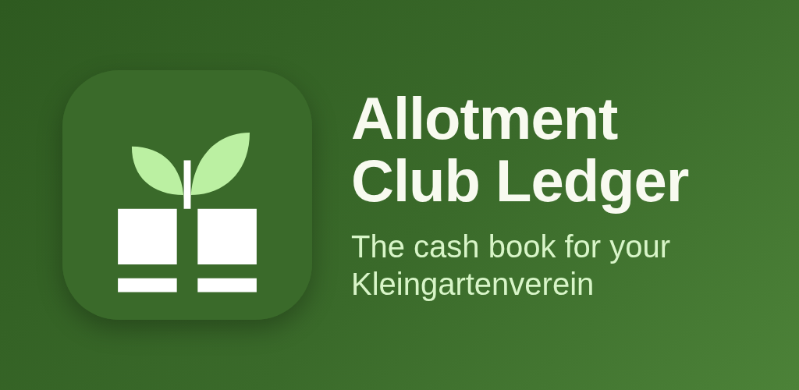

Allotment Club Ledger
Rent, dues, meters, receipts and audit reports for allotment club treasurers



About
The cash book for a German allotment club (Kleingartenverein), on your phone. No account and no spreadsheets. Allotment Club Ledger is made for the treasurer (Kassenwart) who tracks plot rent, dues and levies in Excel or on paper. It calculates the yearly charges, creates the invoices and produces what the cash audit (Kassenprüfung) needs. PLOTS AND MEMBERS - Plots with size in square metres and tenant history. - Tenant change in the middle of the year: all charges are split by month. - Members with or without a plot, with contact details and balance. YEARLY CHARGES - Rent per square metre or flat per plot, membership dues and levies. - Water and electricity by meter reading, with an optional base fee. Fast plot-by-plot entry, with a warning for readings that look wrong. - Community work hours: required hours, hours worked and a fee for each missing hour. - Invoice as PDF with IBAN and payment reference, shared by mail or messenger. BOOKINGS AND RECEIPTS - Bank account and cash box, each with its own balance, and transfers between them. - Income and expenses by category. Payments are matched to open charges automatically, partial payments included. - Photograph a receipt or attach a file. The app points out bookings without a receipt. - Open items: who has not paid, or paid only in part. CASH AUDIT - Report as PDF and CSV: opening balance, income and expenses by category, closing balance per account, and every booking with its receipt reference. - Close the fiscal year so that nothing changes afterwards. You can reopen it if a correction is needed. PRIVACY AND SECURITY - The app has no internet permission. Your data is not sent anywhere. - Database and receipts are encrypted on the device. - App lock with fingerprint or device PIN. Screenshots of the ledger are blocked. - Password-protected, encrypted backup to a file you choose. Restore from the same file. WIDGET - Open amount, number of unpaid members and account balances on your home screen. Amounts can be hidden. PLOT LIMIT AND PRO - All features work for clubs with up to 15 plots. - Pro is an optional one-time in-app purchase through Google Play. It removes the limit of 15 plots. Everything else is included without it. Light and dark theme follow the system setting. Large buttons and TalkBack support. The app is available in German and English. Invoices and reports are always created in German.